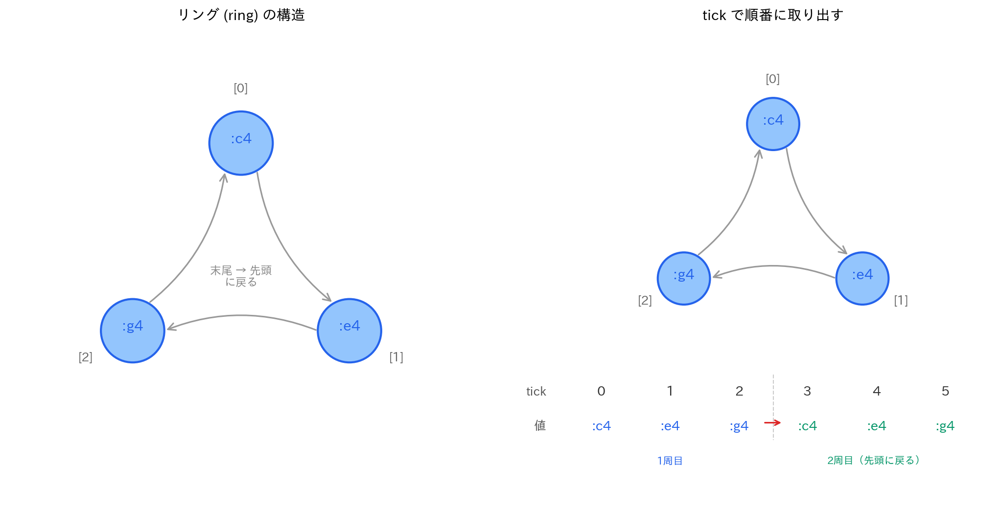

Lesson 7: Sonic Piでメロディとコード¶
このレッスンで学ぶこと¶
- Sonic Pi の
scaleとchordでスケールやコードを簡潔に扱う - リング（ring）の仕組みを理解し、メロディ生成に活用する
- Lesson 6 で学んだ音階の理論を音楽的に応用する
- スケールを使った即興的なメロディ作りを体験する
- 和音の響き（協和/不協和、メジャー/マイナー）を聴いて理解する
- 転回形やテンションコードで和音の表現を広げる
Lesson 6 では平均律の仕組みと MIDI 番号の変換式を学びました。C メジャースケールの音程構造が「全全半全全全半」で、MIDI 番号では [60, 62, 64, 65, 67, 69, 71, 72] になることも確認しました。このレッスンでは Sonic Pi に戻り、スケールやコードを使って音楽的な表現に進みます。
7.1 MIDI 番号と音名の復習¶
Lesson 6 で学んだ MIDI 番号と音名の対応を、Sonic Pi で確認しましょう。
Sonic Pi では :c4 と 60 は同じ音です。ログパネルに表示される情報を見ると、どちらも同じ MIDI 番号として処理されていることがわかります。
音名には s（シャープ）や b（フラット）もつけられます。
play :cs4 # C#4（MIDI 61）
sleep 0.5
play :db4 # Db4（MIDI 61、同じ音）
sleep 0.5
play :fs4 # F#4（MIDI 66）
sleep 0.5
play :bb4 # Bb4（MIDI 70）
:cs4 と :db4 はどちらも MIDI 61 で、同じ音が鳴ります。Lesson 6 で学んだように、平均律ではシャープとフラットが同じ周波数になるためです（異名同音）。
7.2 配列でスケールを弾く¶
Lesson 3 で学んだ play_pattern_timed を使って、C メジャースケールを鳴らしてみましょう。
これは Lesson 3 のドレミファソラシドと同じです。では、別の調（キー）にするにはどうすればよいでしょうか。
G メジャースケール¶
G メジャースケール（ソラシドレミファ#ソ）は、F がシャープになります。
音名を1つずつ書くのは手間がかかりますし、間違いも起きやすいです。ここで Sonic Pi の scale が活躍します。
7.3 scale — スケールを自動生成する¶
scale はスケール（音階）の音を自動的に生成する関数です。
ログに (ring <60, 62, 64, 65, 67, 69, 71, 72>) と表示されます。これは C メジャースケールの MIDI 番号のリストです。Lesson 6 で Python を使って確認した [60, 62, 64, 65, 67, 69, 71, 72] と同じ値が並んでいます。
scale で演奏する¶
たった1行で C メジャースケールが鳴ります。調やスケールの種類を変えるのも簡単です。
use_synth :piano
# G メジャースケール
play_pattern_timed scale(:g4, :major), [0.5]
sleep 1
# D マイナースケール
play_pattern_timed scale(:d4, :minor), [0.5]
sleep 1
# A マイナーペンタトニック
play_pattern_timed scale(:a4, :minor_pentatonic), [0.5]
音数を指定する: num_octaves¶
デフォルトでは1オクターブ分の音が生成されます。num_octaves で範囲を広げられます。
よく使うスケール¶
Sonic Pi には非常に多くのスケールが用意されています。代表的なものを紹介します。
| スケール名 | 説明 | 音程構造（半音数） |
|---|---|---|
:major |
長音階（ドレミファソラシド） | 0, 2, 4, 5, 7, 9, 11, 12 |
:minor |
自然短音階（ラシドレミファソラ） | 0, 2, 3, 5, 7, 8, 10, 12 |
:minor_pentatonic |
マイナーペンタトニック | 0, 3, 5, 7, 10, 12 |
:major_pentatonic |
メジャーペンタトニック | 0, 2, 4, 7, 9, 12 |
:blues_minor |
ブルーススケール | 0, 3, 5, 6, 7, 10, 12 |
:chromatic |
半音階（12音すべて） | 0, 1, 2, ..., 12 |
:chromatic（半音階）は Lesson 6 で学んだ12平均律の全12音を含みます。:major はその中から7音を選んだものです。
ヒント: Sonic Pi のヘルプパネル（Lang タブ → scale）で全スケールの一覧を確認できます。
7.4 リング（ring）¶
scale の出力をログで見ると (ring ...) と表示されました。これは Sonic Pi のリング（ring）というデータ構造です。
リングとは¶
リングは配列の一種ですが、末尾に達すると先頭に戻るという特別な性質を持っています（図7.1 左）。
notes = (ring :c4, :e4, :g4)
puts notes[0] # :c4
puts notes[1] # :e4
puts notes[2] # :g4
puts notes[3] # :c4（先頭に戻る）
puts notes[4] # :e4
Python のリストなら notes[3] は IndexError になりますが、リングでは先頭に戻って :c4 が返ります。この「ぐるぐる回る」性質がリングの名前の由来です。
tick と look — リングを順番に取り出す¶
リングを順番に取り出すには tick を使います。
tick は呼ばれるたびにカウンタを1つ進めて、対応する要素を返します。リングなので3つ目の次は先頭に戻り、ド・ミ・ソ・ド・ミ・ソ……と無限に繰り返されます（図7.1 右）。

look は tick と似ていますが、カウンタを進めずに現在の値を返します。
live_loop :demo do
play notes.tick # カウンタを進めて再生
puts notes.look # 同じ値をもう一度確認（カウンタは進まない）
sleep 0.5
end
scale の戻り値はリング¶
scale が返すのもリングなので、tick と組み合わせるとスケールの音を順番に繰り返し演奏できます。
C メジャースケールの8音（ド〜ド）が延々と繰り返されます。
7.5 スケールを使ったメロディ作り¶
ランダムにスケールの音を選ぶ¶
Lesson 3 で学んだ .choose をスケールと組み合わせると、スケール内の音だけを使ったランダムメロディが作れます。
use_synth :pluck
live_loop :random_melody do
play scale(:a4, :minor_pentatonic).choose
sleep 0.25
end
マイナーペンタトニックスケールは5音しかないため、ランダムに選んでも不協和な組み合わせが起きにくく、それらしいメロディに聞こえます。ペンタトニックスケールが即興演奏の入門として人気がある理由です。
スケールを変えるだけで雰囲気がガラッと変わります。
use_synth :pluck
live_loop :random_blues do
play scale(:e3, :blues_minor).choose
sleep [0.25, 0.25, 0.5].choose
end
tick でスケールを上下する¶
use_synth :saw
use_bpm 120
notes = scale(:c4, :minor, num_octaves: 2)
live_loop :ascending do
play notes.tick, cutoff: 90, release: 0.3
sleep 0.25
end
tick はリングを順番に進むので、スケールを上昇し、最高音に達したら最低音に戻ってまた上昇します。
リングの操作で変化をつける¶
リングには便利なメソッドがたくさんあります。
notes = scale(:c4, :major)
puts notes # 元のスケール（上昇）
puts notes.reverse # 逆順（下降）
puts notes.shuffle # シャッフル（ランダム並べ替え）
puts notes.mirror # 上昇→下降（折り返し）
.mirror を使うと、スケールを上がって下がるフレーズが簡単に作れます。
ド・レ・ミ・ファ・ソ・ラ・シ・ド・シ・ラ・ソ・ファ・ミ・レ・ドと、上昇してから下降します。
7.6 chord — 和音を鳴らす¶
scale がスケール（音階）を生成するのに対し、chord は和音（コード）を生成します。
C メジャーコード（ド・ミ・ソ）が同時に鳴ります。
Lesson 6 の MIDI 番号で確認すると、60（C4）、64（E4）、67（G4）です。C4 から長3度（4半音）上が E4、そこから短3度（3半音）上が G4 で、合わせて完全5度（7半音）——Lesson 6 の音程の表と一致します。
メジャーとマイナー — たった1半音の違い¶
和音の中で最も基本的な区別が、メジャー（長三和音）とマイナー（短三和音）です。まず聴き比べてみましょう。
use_synth :piano
play chord(:c4, :major) # Cメジャー（ド・ミ・ソ）
sleep 2
play chord(:c4, :minor) # Cマイナー（ド・ミb・ソ）
メジャーは明るく、マイナーは暗く聞こえるはずです。では、構成音を比べてみましょう。
puts chord(:c4, :major) # (ring 60, 64, 67) — ド・ミ・ソ
puts chord(:c4, :minor) # (ring 60, 63, 67) — ド・ミb・ソ
違いは真ん中の音だけです。メジャーの 64（ミ）がマイナーでは 63（ミb）になっています。ルート（ド）と5度（ソ）はまったく同じで、3度の音が1半音違うだけで響きの印象がガラッと変わるのです。
| ルート | 3度 | 5度 | |
|---|---|---|---|
| メジャー | C4（60） | E4（64）— 長3度（4半音） | G4（67） |
| マイナー | C4（60） | Eb4（63）— 短3度（3半音） | G4（67） |
この違いを体で覚えるために、交互に鳴らしてみてください。
同じルートで交互に聴くと、1半音の差がいかに大きいかがよくわかります。
7.7 協和と不協和を聴き比べる¶
和音が「きれい」に響くか「ぶつかって」聞こえるかは、音同士の間隔（音程）によって決まります。Lesson 6 で学んだ音程を、2音の重なりとして実際に聴いてみましょう。
use_synth :piano
# 協和音程
play [:c4, :g4] # 完全5度（7半音）— とても澄んだ響き
sleep 2
play [:c4, :f4] # 完全4度（5半音）— 安定した響き
sleep 2
play [:c4, :e4] # 長3度（4半音）— 明るく柔らかい
sleep 2
# 不協和音程
play [:c4, :db4] # 短2度（1半音）— 強い緊張感
sleep 2
play [:c4, :fs4] # 増4度/トライトーン（6半音）— 不安定
完全5度はとても澄んで聞こえますが、短2度（隣り合う鍵盤を同時に押す状態）は「ぶつかる」ように感じるはずです。
Lesson 6 で、協和する音程ほど周波数比が単純な整数比に近いことを学びました。
| 音程 | 半音数 | 近似整数比 | 響き |
|---|---|---|---|
| 完全5度 | 7 | 3:2 | とても協和 |
| 完全4度 | 5 | 4:3 | 協和 |
| 長3度 | 4 | 5:4 | 協和（柔らかい） |
| 短2度 | 1 | 16:15 | 不協和（緊張） |
| 増4度 | 6 | 45:32 | 不協和（不安定） |
不協和が「悪い」わけではありません。音楽では緊張（不協和）と解決（協和）の交代がドラマを生みます。増4度（トライトーン）はドミナントセブンスコード（:dom7）の中に含まれており、次のコードへ「解決したい」という推進力を作っています。
use_synth :piano
# C7 → F の解決感を聴く
play chord(:c4, :dom7) # C7: ミとシbの間が増4度 → 緊張
sleep 2
play chord(:f3, :major) # F: 解決
7.8 転回形 — 同じ和音、違う響き¶
C メジャーコードの構成音はド・ミ・ソですが、どの音を一番下（最低音）に置くかで響きが変わります。これを転回形（inversion）と呼びます。
chord が返すリングに .rotate を使うと、転回形を簡単に作れます。
use_synth :piano
play chord(:c4, :major) # 基本形: ド・ミ・ソ
sleep 2
play chord(:c4, :major).rotate(1) # 第1転回形: ミ・ソ・ド
sleep 2
play chord(:c4, :major).rotate(2) # 第2転回形: ソ・ド・ミ
puts chord(:c4, :major) # (ring 60, 64, 67)
puts chord(:c4, :major).rotate(1) # (ring 64, 67, 72)
puts chord(:c4, :major).rotate(2) # (ring 67, 72, 76)
| 転回形 | 最低音 | MIDI | 響きの特徴 |
|---|---|---|---|
| 基本形 | ド | 60, 64, 67 | 安定、堂々とした響き |
| 第1転回形 | ミ | 64, 67, 72 | 少し軽く、流れるような響き |
| 第2転回形 | ソ | 67, 72, 76 | 浮遊感がある、次に進みたい響き |
構成音は同じド・ミ・ソなのに、最低音が変わるだけで印象が違います。コード進行では転回形を使うと、ベース音（最低音）の動きをなめらかにできます。
use_synth :piano
live_loop :smooth_bass do
play chord(:c4, :major) # C: ド・ミ・ソ
sleep 2
play chord(:f3, :major).rotate(2) # F/C: ド・ファ・ラ（ベースがドのまま）
sleep 2
play chord(:g3, :major).rotate(1) # G/B: シ・レ・ソ（ベースが半音下がる）
sleep 2
play chord(:c4, :major) # C に戻る
sleep 2
end
7.9 コード進行とテンションコード¶
基本的なコード進行¶
和音を順番に鳴らすとコード進行になります。C メジャーキーの定番進行（I-V-vi-IV）を演奏してみましょう。
use_synth :piano
live_loop :chord_progression do
play chord(:c4, :major) # I: C
sleep 2
play chord(:g3, :major) # V: G
sleep 2
play chord(:a3, :minor) # vi: Am
sleep 2
play chord(:f3, :major) # IV: F
sleep 2
end
ポップスでよく聞くコード進行です。
セブンスコード¶
3音の和音（三和音）にもう1つ3度上の音を重ねると、4音のセブンスコード（七の和音）になります。
use_synth :piano
play chord(:c4, :major) # Cメジャー（3音: ド・ミ・ソ）
sleep 2
play chord(:c4, :maj7) # Cmaj7（4音: ド・ミ・ソ・シ）
sleep 2
play chord(:c4, :dom7) # C7（4音: ド・ミ・ソ・シb）
sleep 2
play chord(:a3, :minor7) # Am7（4音: ラ・ド・ミ・ソ）
| コード名 | 構成 | 説明 |
|---|---|---|
:major |
ルート + 長3度 + 完全5度 | 基本の明るい響き |
:minor |
ルート + 短3度 + 完全5度 | 基本の暗い響き |
:maj7 |
メジャー + 長7度 | おしゃれで柔らかい |
:dom7 |
メジャー + 短7度 | ブルージー、解決を求める |
:minor7 |
マイナー + 短7度 | 柔らかく暗い |
ナインスコード — さらに音を重ねる¶
セブンスコードの上にさらに3度を重ねるとナインスコードになります。ジャズやシティポップでよく使われる、豊かな響きです。
use_synth :piano
play chord(:c4, :major) # C（3音）
sleep 2
play chord(:c4, :maj7) # Cmaj7（4音）
sleep 2
play chord(:c4, :major9) # Cmaj9（5音: ド・ミ・ソ・シ・レ）
音が増えるほど響きが複雑で豊かになるのがわかります。三和音 → セブンス → ナインスと、3度の積み重ねで和音が拡張されていく仕組みです。
セブンスやナインスを使ったコード進行も試してみましょう。
use_synth :piano
live_loop :jazzy do
play chord(:d4, :minor7), amp: 0.6
sleep 2
play chord(:g3, :dom7), amp: 0.6
sleep 2
play chord(:c4, :major9), amp: 0.6
sleep 2
play chord(:c4, :major9), amp: 0.6
sleep 2
end
Dm7 → G7 → Cmaj9 は「ツーファイブワン」（ii-V-I）と呼ばれる、ジャズの最も基本的な進行です。
7.10 メロディとコードを組み合わせる¶
live_loop を2つ使って、メロディとコードを同時に鳴らしてみましょう。
use_bpm 100
live_loop :chords do
use_synth :piano
play chord(:a3, :minor), amp: 0.5
sleep 2
play chord(:f3, :major), amp: 0.5
sleep 2
play chord(:c4, :major), amp: 0.5
sleep 2
play chord(:g3, :major), amp: 0.5
sleep 2
end
live_loop :melody do
use_synth :pluck
play scale(:a4, :minor_pentatonic).choose, amp: 0.7
sleep [0.25, 0.5].choose
end
コード進行（Am → F → C → G）の上で、マイナーペンタトニックのランダムメロディが鳴ります。2つの live_loop は独立に動くため、ループの長さが異なっていても問題ありません。
7.11 Lesson 6 の理論との対応¶
ここまでの内容を Lesson 6 の理論と照らし合わせましょう。
scale と音程構造¶
Lesson 6 で C メジャースケールの音程構造が「全全半全全全半」（半音数で 0, 2, 4, 5, 7, 9, 11, 12）であることを学びました。scale(:c4, :major) はまさにこの構造に従って MIDI 番号を生成しています。
# scale の中身を確認
s = scale(:c4, :major)
puts s # (ring 60, 62, 64, 65, 67, 69, 71, 72)
# 隣接する音の差（半音数）を確認
s.length.times do |i|
if i > 0
puts s[i] - s[i-1] # 2, 2, 1, 2, 2, 2, 1 と表示される
end
end
全音は MIDI 番号の差が 2、半音は差が 1 です。Lesson 6 の表そのままの値が出ています。
chord と周波数比¶
Lesson 6 で「完全5度は7半音、長3度は4半音」と学びました。chord(:c4, :major) は MIDI 60, 64, 67 を返しますが、これは 60 → 64（4半音 = 長3度）→ 67（さらに3半音 = 短3度）という構造です。ルートから見ると、64 は長3度（4半音）、67 は完全5度（7半音）上にあります。
Lesson 6 で求めた周波数比に換算すると：
| 音 | MIDI | 周波数比 | 近似整数比 |
|---|---|---|---|
| C4 | 60 | 1.000 | 1 |
| E4 | 64 | 1.260 | 5:4 |
| G4 | 67 | 1.498 | 3:2 |
和音が美しく響くのは、構成音の周波数比が単純な整数比に近いからです。これも Lesson 6 で学んだ純正律の考え方と一致します。
まとめ¶
このレッスンで学んだことを整理します。
| コマンド / メソッド | 役割 | 例 |
|---|---|---|
scale |
スケールの音をリングで生成 | scale(:c4, :major) |
chord |
和音の音をリングで生成 | chord(:c4, :major) |
.rotate |
リングの要素を回転（転回形に使う） | chord(:c4, :major).rotate(1) |
(ring ...) |
末尾→先頭に戻る配列 | (ring :c4, :e4, :g4) |
.tick |
リングを順番に取り出す | notes.tick |
.look |
カウンタを進めず現在値を返す | notes.look |
.reverse |
リングを逆順にする | notes.reverse |
.mirror |
上昇→下降の折り返し | notes.mirror |
.shuffle |
リングをシャッフル | notes.shuffle |
.choose |
ランダムに1つ選ぶ（復習） | notes.choose |
num_octaves: |
スケールのオクターブ数 | scale(:c4, :major, num_octaves: 2) |
| 概念 | 内容 |
|---|---|
| スケール | 音階。scale で自動生成できる |
| コード | 和音。chord で自動生成できる |
| 協和/不協和 | 周波数比が単純なほど協和。緊張と解決が音楽のドラマを生む |
| 転回形 | 和音の最低音を変えること。.rotate で実現 |
| セブンス/ナインス | 3度を積み重ねて和音を拡張。響きが豊かになる |
| リング | 末尾から先頭に巡回するデータ構造 |
| ペンタトニック | 5音スケール。ランダムでも不協和になりにくい |
| コード進行 | 和音を順番に並べたもの |
Lesson 6 との対応¶
| Lesson 6（Python） | Lesson 7（Sonic Pi） |
|---|---|
C メジャースケール [60, 62, 64, 65, 67, 69, 71, 72] |
scale(:c4, :major) で同じ値を生成 |
| 音程構造「全全半全全全半」 | scale が内部で自動計算 |
| 長3度 = 4半音、完全5度 = 7半音 | chord(:c4, :major) の構成音に反映 |
| 協和音程の周波数比（3:2、5:4 など） | 2音の重なりとして聴いて体感 |
| MIDI 番号と音名の対応 | :c4 = 60、:a4 = 69 |
| 平均律の変換式 \(f = 440 \times 2^{(n-69)/12}\) | Sonic Pi が内部で同じ計算を実行 |
次回予告¶
Lesson 8 では Python に戻り、エンベロープ（ADSR） を学びます。音の「立ち上がり」「減衰」「持続」「余韻」の4つの段階を制御し、音に表情をつける方法を理解します。